SELECTED PUBLICATIONS
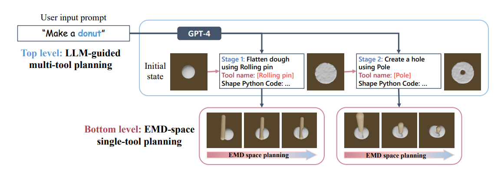
Make a Donut: Hierarchical EMD-Space Planning for Zero-Shot Deformable Manipulation with Tools
Yang You, Bokui Shen, Congyue Deng, Haoran Geng, Songlin Wei, He Wang, Leonidas Guibas
RA-L 2025
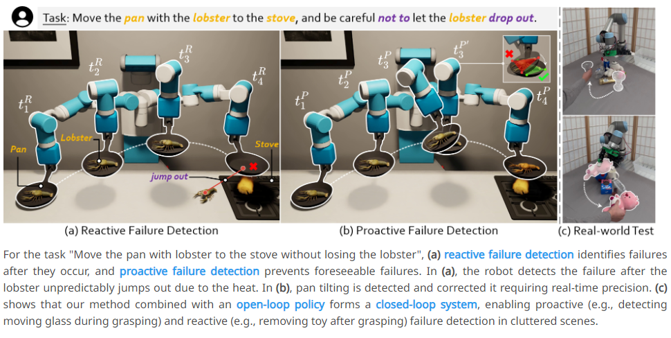
Code-as-Monitor: Constraint-aware Visual Programming for
Reactive and Proactive Robotic Failure Detection
Enshen Zhou*, Qi Su*,
Cheng Chi*† Zhizheng Zhang, Zhongyuan
Wang, Tiejun Huang, Lu Sheng†, He Wang†
CVPR 2025
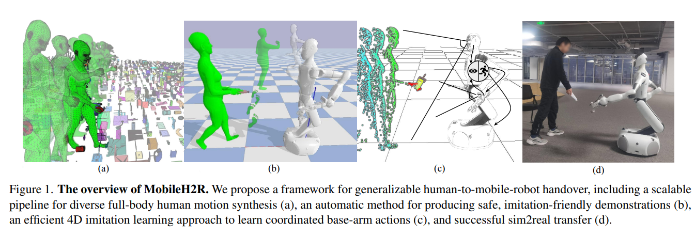
MobileH2R: Learning Generalizable Human to Mobile Robot Handover
Exclusively from Scalable and Diverse Synthetic Data
Zifan Wang*, Ziqing Chen*, Junyu Chen*, Jilong Wang, Yuxin Yang,
Yunze Liu, Xueyi Liu, He Wang,
Li Yi†
CVPR 2025
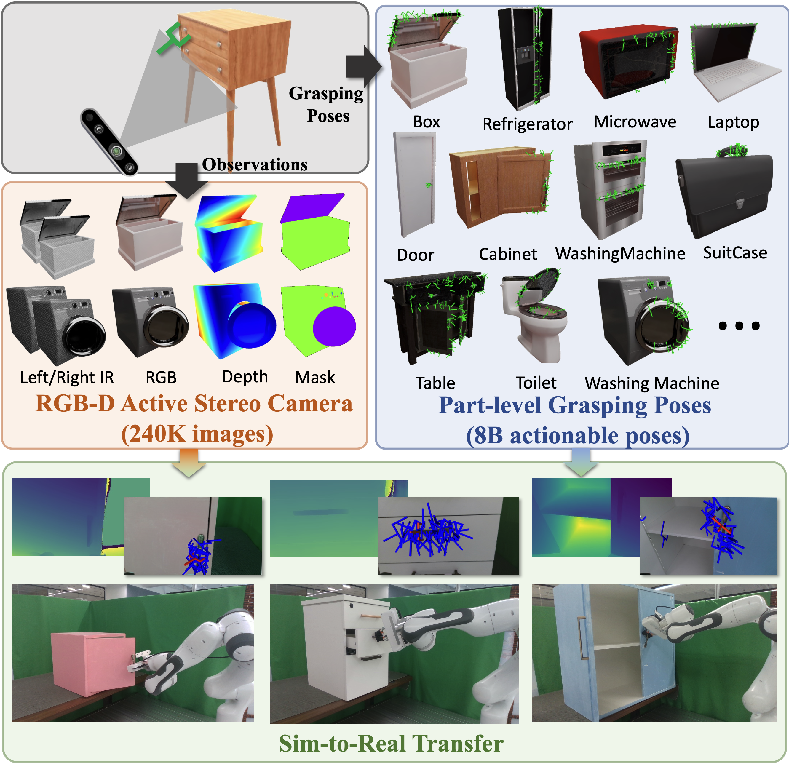
GAPartManip: A Large-scale Part-centric Dataset for
Material-Agnostic Articulated Object Manipulation
Wenbo Cui*, Chengyang Zhao* , Songlin Wei* , Jiazhao Zhang,
Haoran Geng,Yaran Chen,
He Wang†
ICRA 2025
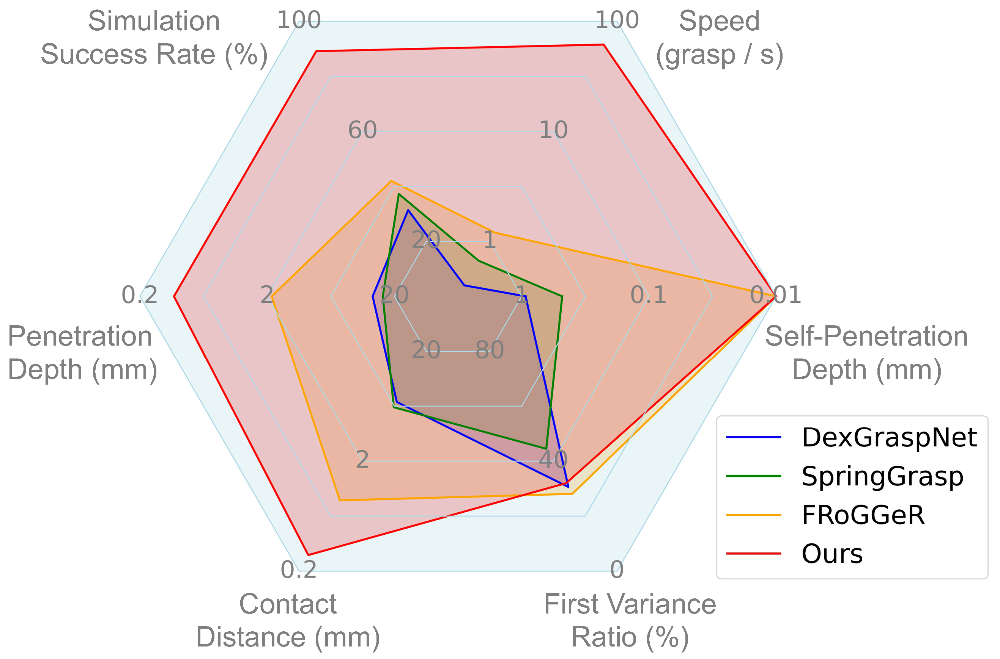
BODex: Scalable and Efficient Robotic Dexterous Grasp Synthesis
Using Bilevel Optimization
Jiayi Chen, Yubin,
He Wang†
ICRA 2025
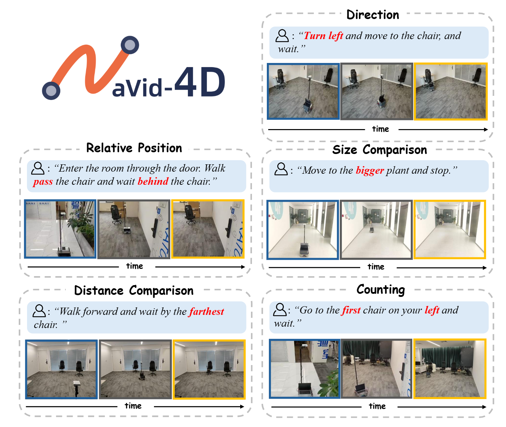
NaVid-4D: Unleashing Spatial Intelligence in Egocentric RGB-D
Videos for Vision-and-Language Navigation
Haoran Liu, Weikang Wan, Xiqian Yu, Minghan Li, Jiazhao Zhang,
Bo Zhao, Zhibo Chen, Zhongyuan Wang, Zhizheng Zhang,
He Wang†
ICRA 2025
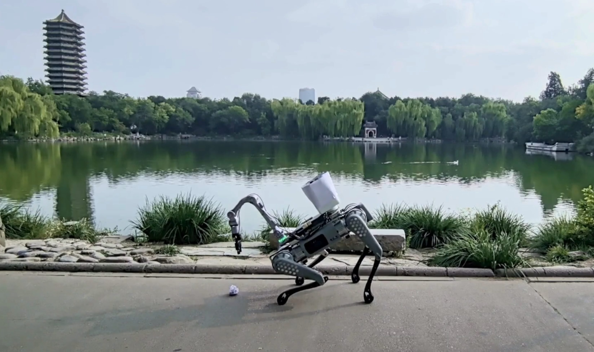
QuadWBG: Generalizable Quadrupedal Whole-Body Grasping
Jilong Wang, Javokhirbek Rajabov, Chaoyi Xu, Yiming Zheng,
He Wang†
ICRA 2025
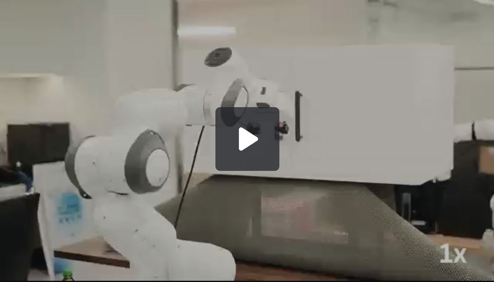
Watch Less, Feel More: Direct Sim-to-real RL for Articulated
Object Manipulation with Motion Adaptation and Impedance Control
Tan-Dzung Do, Gireesh Nandiraju, Jilong Wang,
He Wang†
ICRA 2025
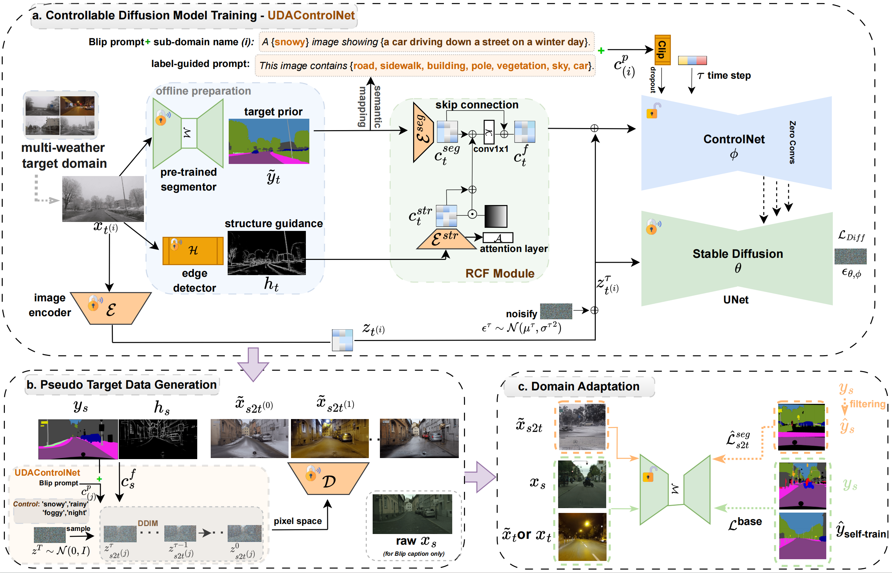
W-ControlUDA: Weather-Controllable Diffusion-assisted
Unsupervised Domain Adaptation for Semantic Segmentation
Fengyi Shen, Li Zhou, Kagan Kucukaytekin, George Eskandar,
Ziyuan Liu,
He Wang†, Alois Knoll†
RA-L
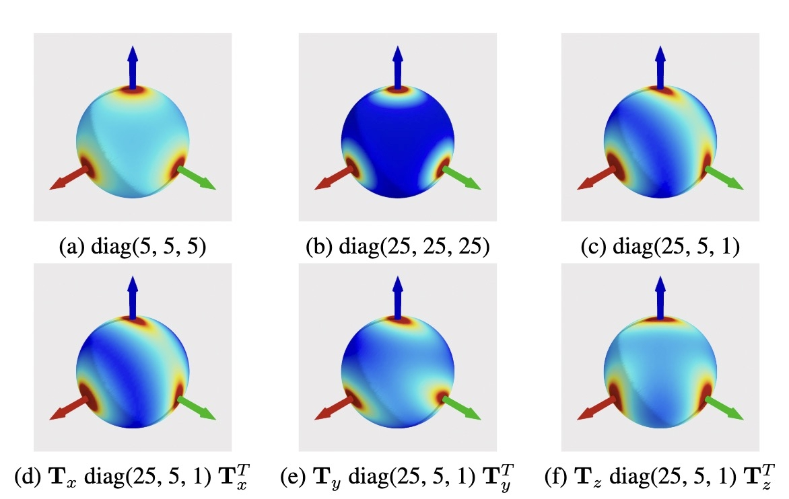
Towards Robust Probabilistic Modeling on SO(3) via Rotation
Laplace Distribution
Yingda Yin*, Jiangran Lyu*, Yang Wang,
He Wang†, Baoquan Chen†
TPAMI
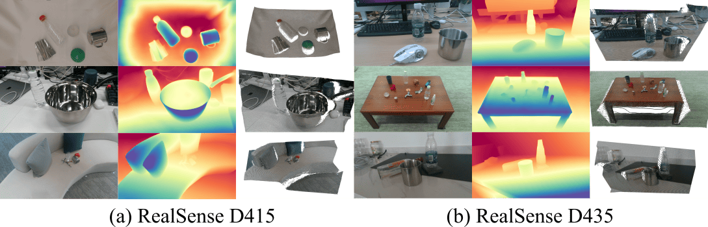
D3RoMa: Disparity Diffusion-based Depth Sensing for
Material-Agnostic Robotic Manipulation
Songlin Wei, Haoran Geng, Jiayi Chen, Congyue Deng, Wenbo Cui,
Chengyang Zhao, Xiaomeng Fang, Leonidas Guibas,He Wang†
CoRL 2024
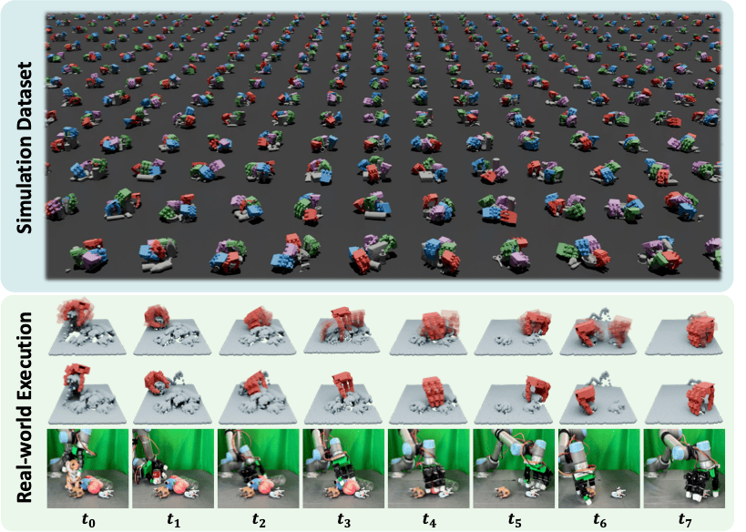
DexGraspNet 2.0: Learning Generative Dexterous Grasping in
Large-scale Synthetic Cluttered Scenes
Jialiang Zhang*, Haoran Liu*, Danshi Li*, Xinqiang Yu*, Haoran
Geng, Yufei Ding, Jiayi Chen, He Wang†
CoRL 2024
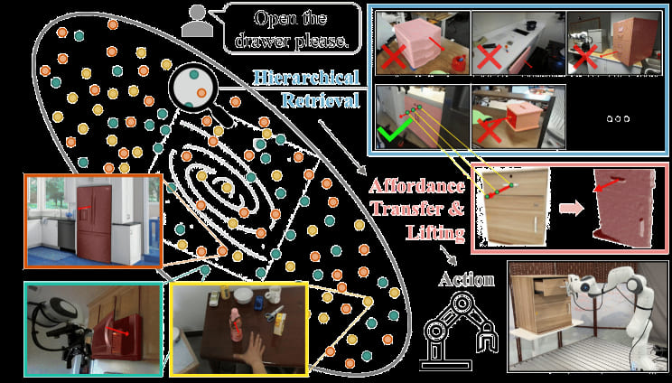
RAM: Retrieval-Based Affordance Transfer for Generalizable
Zero-Shot Robotic Manipulation
Yuxuan Kuang*, Junjie Ye*, Haoran Geng*, Jiageng Mao, Congyue
Deng, Leonidas Guibas, He Wang, Yue Wang
CoRL 2024
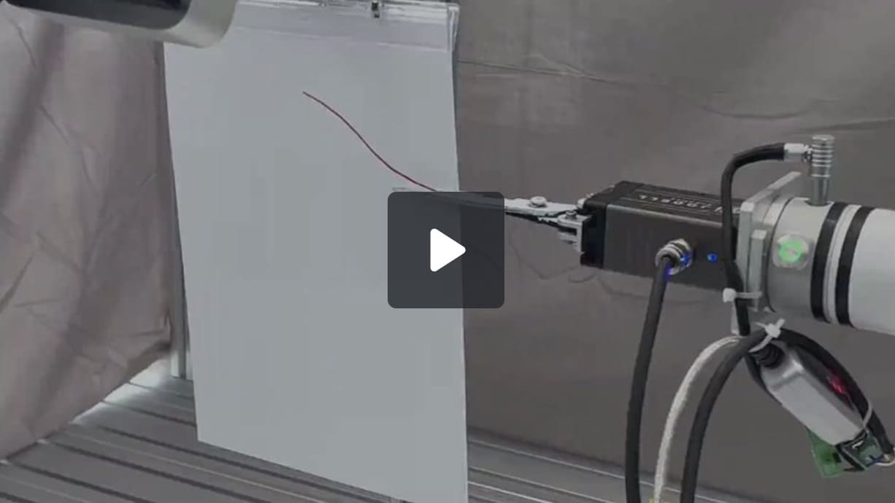
ScissorBot: Learning Generalizable Scissor Skill for Paper
Cutting via Simulation, Imitation, and Sim2Real
Jiangran Lyu, Yuxing Chen, Tao Du, Feng Zhu, Huiquan Liu,
Yizhou Wang†, He Wang†
CoRL 2024

Task-Oriented Dexterous Grasp Synthesis via Differentiable Grasp
Wrench Boundary Estimator
Jiayi Chen,Yuxing Chen,Jialiang Zhang,
He Wang†
IROS 2024

Open6DOR: Benchmarking Open-instruction 6-DoF Object
Rearrangement and A VLM-based Approach
Yufei Ding,Haoran Geng , Chaoyi Xu ,Xiaomeng Fang,Jiazhao
Zhang,Songlin Wei, Qiyu Dai, Zhizheng Zhang,
He Wang†
IROS 2024 (Oral Presentation)
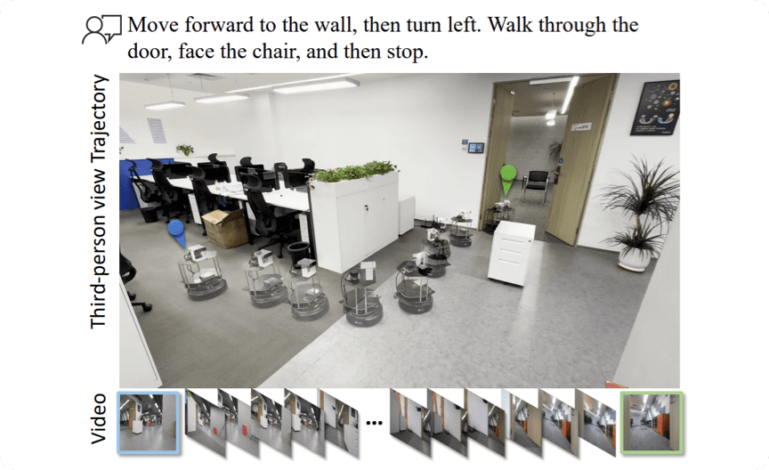
NaVid: Video-based VLM Plans the Next Step for
Vision-and-Language Navigation
Jiazhao Zhang, Kunyu Wang ,Rongtao Xu* ,Gengze Zhou ,Yicong Hong
,Xiaomeng Fang ,Qi Wu ,Zhizheng Zhang† ,
He Wang†
RSS 2024
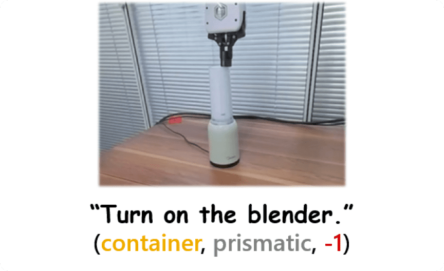
SAGE: Bridging Semantic and Actionable Parts for Generalizable
Manipulation of Articulated Objects
Haoran Geng*, Songlin Wei*, Congyue Deng, Bokui Shen,
He Wang†, Leonidas Guibas†
RSS 2024
@misc{geng2023sage,
title={SAGE: Bridging Semantic and Actionable Parts for GEneralizable Articulated-Object Manipulation under Language Instructions},
author={Haoran Geng and Songlin Wei and Congyue Deng and Bokui Shen and He Wang and Leonidas Guibas},
year={2023},
eprint={2312.01307},
archivePrefix={arXiv},
primaryClass={cs.RO}
}
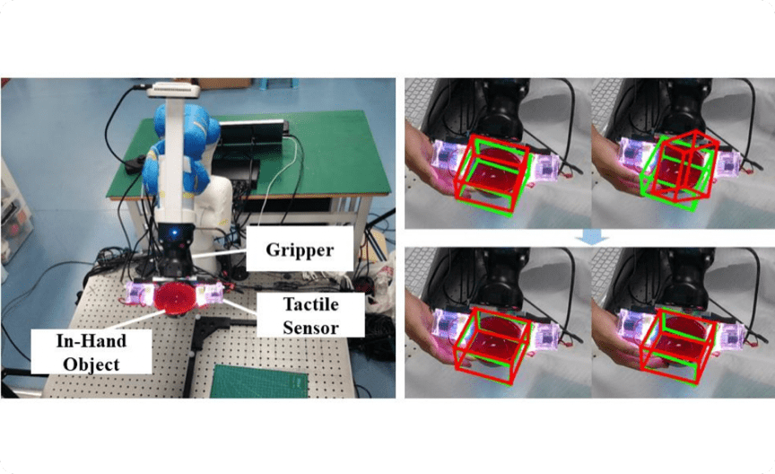
Enhancing Generalizable 6D Pose Tracking of an In-Hand Object
with Tactile Sensing
Yun Liu*, Xiaomeng Xu*, Weihang Chen, Haocheng Yuan,
He Wang, Jing Xu, Rui Chen, Li Yi†
RA-L
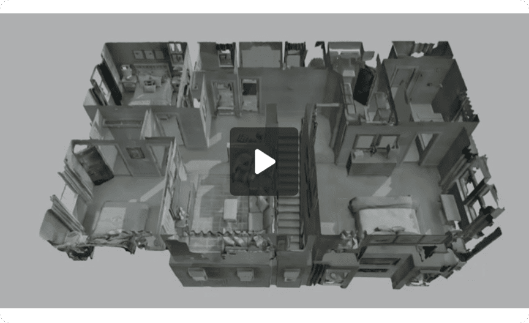
MaskClustering: View Consensus based Mask Graph Clustering for
Open-Vocabulary 3D Instance Segmentation
Mi Yan, Jiazhao Zhang, Yan Zhu,
He Wang†
CVPR 2024

Category-Level Multi-Part Multi-Joint 3D Shape Assembly
Yichen Li† ,Kaichun Mo, Yueqi Duan ,
He Wang, Jiequan Zhang, Lin Shao, Wojciech Matusik,
Leonidas Guibas
CVPR 2024
@article{li2020impartass,
title={Learning 3D Part Assembly from a Single Image},
author={Li, Yichen and Mo, Kaichun and Shao, Lin and Sung, Minghyuk and Guibas, Leonidas},
journal={European conference on computer vision (ECCV 2020)},
year={2020}
}
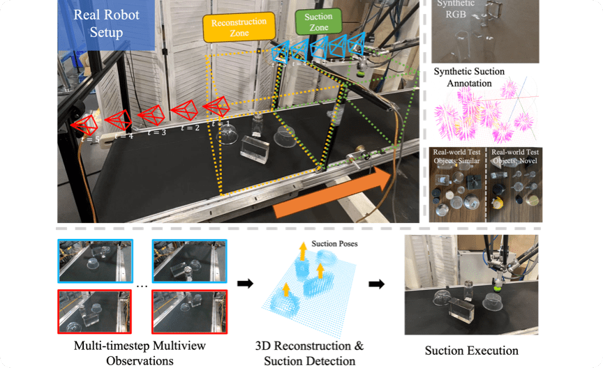
STOPNet: Multiview-based 6-DoF Suction Detection for Transparent
Objects on Production Lines
Yuxuan Kuang*, Qin Han*, Danshi Li, Qiyu Dai, Lian Ding, Dong
Sun, Hanlin Zhao,
He Wang†
ICRA 2024
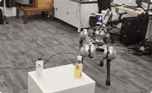
GAMMA: Graspability-Aware Mobile MAnipulation Policy Learning
based on Online Grasping Pose Fusion
Jiazhao Zhang*, Nandiraju Gireesh*, Jilong Wang, Xiaomeng Fang,
Chaoyi Xu, Weiguang Chen, Liu Dai,
He Wang
ICRA 2024
@misc{zhang2023gamma,
title={GAMMA: Graspability-Aware Mobile MAnipulation Policy Learning based on Online Grasping Pose Fusion},
author={Jiazhao Zhang and Nandiraju Gireesh and Jilong Wang and Xiaomeng Fang and Chaoyi Xu and Weiguang Chen and Liu Dai and He Wang},
year={2023},
eprint={2309.15459},
archivePrefix={arXiv},
primaryClass={cs.RO}
}
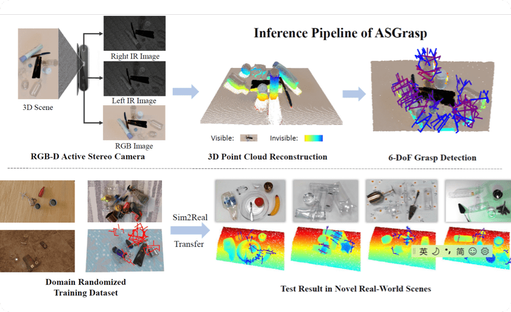
ASGrasp: Generalizable Transparent Object Reconstruction and
6-DoF Grasp Detection from RGB-D Active Stereo Camera
Jun Shi, Yong A, Yixiang Jin, Dingzhe Li, Haoyu Niu, Zhezhu Jin,
He Wang†
ICRA 2024
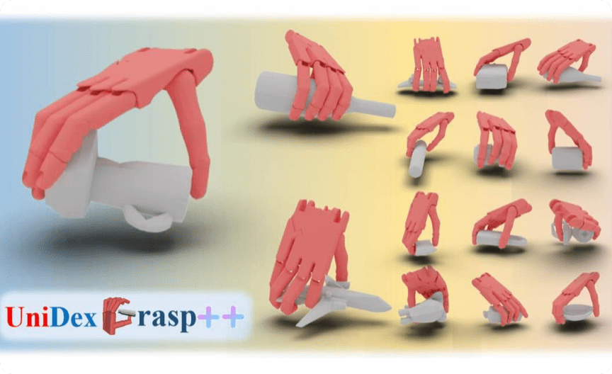
UniDexGrasp++: Improving Dexterous Grasping Policy Learning via
Geometry-aware Curriculum and Iterative Generalist-Specialist
Learning
Weikang Wan*, Haoran Geng*, Yun Liu, Zikang Shan, Yaodong Yang,
Li Yi,
He Wang†
ICCV 2023 (Oral & Best Paper Finalist, final reviews of
all strong accepts)
@article{wan2023unidexgrasp++,
title={UniDexGrasp++: Improving Dexterous Grasping Policy Learning via Geometry-aware Curriculum and Iterative Generalist-Specialist Learning},
author={Wan, Weikang and Geng, Haoran and Liu, Yun and Shan, Zikang and Yang, Yaodong and Yi, Li and Wang, He},
journal={arXiv preprint arXiv:2304.00464},
year={2023}
}
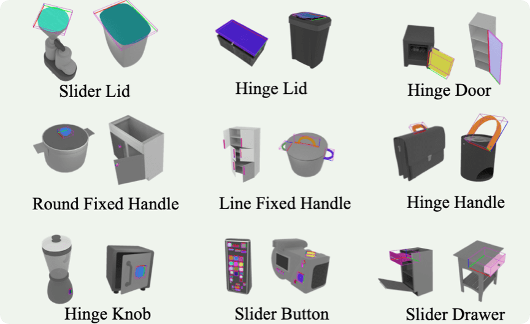
GAPartNet: Cross-Category Domain-Generalizable Object Perception
and Manipulation via Generalizable and Actionable Parts
Haoran Geng*, Helin Xu*, Chengyang Zhao*, Chao Xu, Li Yi, Siyuan
Huang,
He Wang†
CVPR 2023 (Highlight, , final reviews of all accepts)
@article{geng2022gapartnet,
title={GAPartNet: Cross-Category Domain-Generalizable Object Perception and Manipulation via Generalizable and Actionable Parts},
author={Geng, Haoran and Xu, Helin and Zhao, Chengyang and Xu, Chao and Yi, Li and Huang, Siyuan and Wang, He},
journal={arXiv preprint arXiv:2211.05272},
year={2022}
}
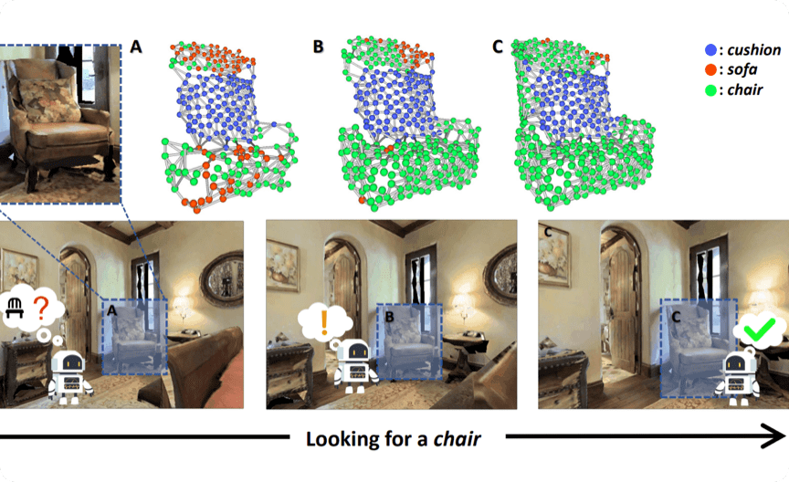
3D-Aware Object Goal Navigation via Simultaneous Exploration and
Identification
Jiazhao Zhang*, Liu Dai*, Fanpeng Meng, Qingnan Fan, Xuelin
Chen, Kai Xu,
He Wang†
CVPR 2023
@article{zhang20223d,
title={3D-Aware Object Goal Navigation via Simultaneous Exploration and Identification},
author={Zhang, Jiazhao and Dai, Liu and Meng, Fanpeng and Fan, Qingnan and Chen, Xuelin and Xu, Kai and Wang, He},
journal={arXiv preprint arXiv:2212.00338},
year={2022}
}
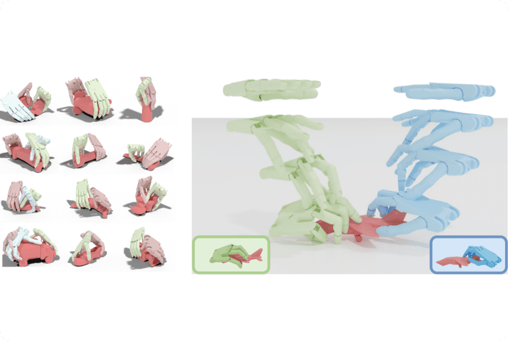
UniDexGrasp: Universal Robotic Dexterous Grasping via Learning
Diverse Proposal Generation and Goal-Conditioned Policy
Yinzhen Xu*, Weikang Wan*, Jialiang Zhang*, Haoran Liu*, Zikang
Shan, Hao Shen, Ruicheng Wang, Haoran Geng, Yijia Weng, Jiayi
Chen, Tengyu Liu, Li Yi,
He Wang†
CVPR 2023
@article{xu2023unidexgrasp,
title={UniDexGrasp: Universal Robotic Dexterous Grasping via Learning Diverse Proposal Generation and Goal-Conditioned Policy},
author={Xu, Yinzhen and Wan, Weikang and Zhang, Jialiang and Liu, Haoran and Shan, Zikang and Shen, Hao and Wang, Ruicheng and Geng, Haoran and Weng, Yijia and Chen, Jiayi and others},
journal={arXiv preprint arXiv:2303.00938},
year={2023}
}
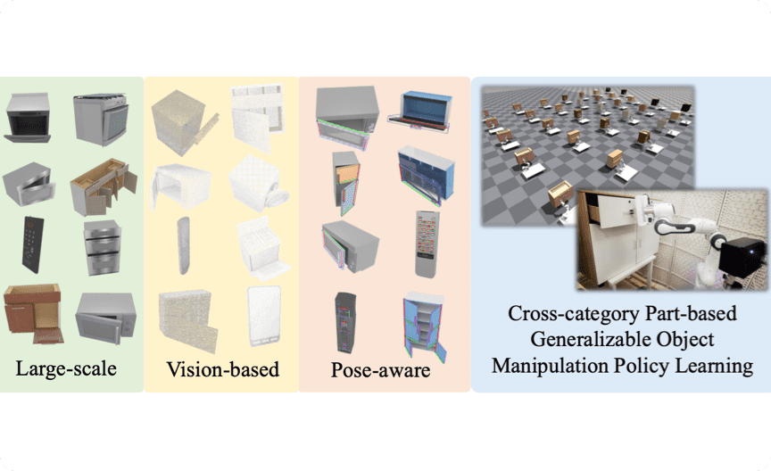
PartManip: Learning Cross-Category Generalizable Part
Manipulation Policy from Point Cloud Observations
Haoran Geng*, Ziming Li*, Yiran Geng, Jiayi Chen, Hao Dong,
He Wang†
CVPR 2023
@article{geng2023partmanip,
title={PartManip: Learning Cross-Category Generalizable Part Manipulation Policy from Point Cloud Observations},
author={Geng, Haoran and Li, Ziming and Geng, Yiran and Chen, Jiayi and Dong, Hao and Wang, He},
journal={arXiv preprint arXiv:2303.16958},
year={2023}
}
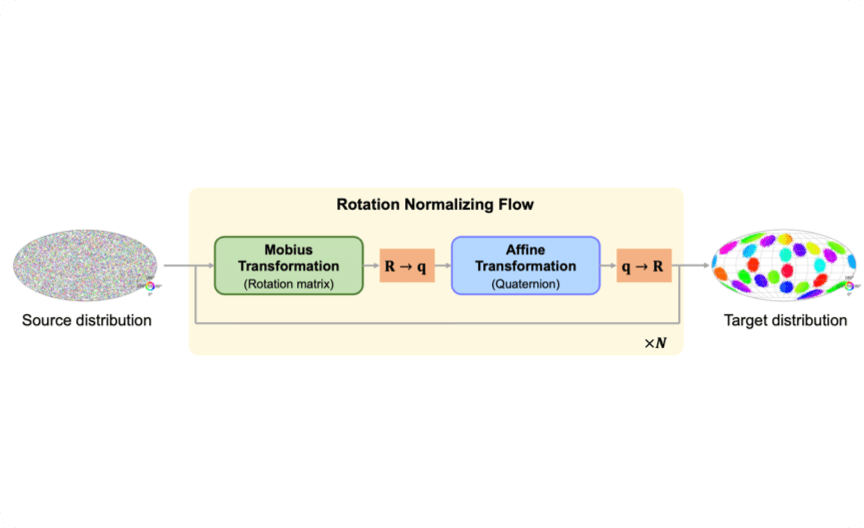
Delving into Discrete Normalizing Flows on SO(3) Manifold for
Probabilistic Rotation Modeling
Yulin Liu*, Haoran Liu*, Yingda Yin*, Yang Wang, Baoquan
Chen†,
He Wang†
CVPR 2023
@article{liu2023delving,
title={Delving into Discrete Normalizing Flows on SO (3) Manifold for Probabilistic Rotation Modeling},
author={Liu, Yulin and Liu, Haoran and Yin, Yingda and Wang, Yang and Chen, Baoquan and Wang, He},
journal={arXiv preprint arXiv:2304.03937},
year={2023}
}
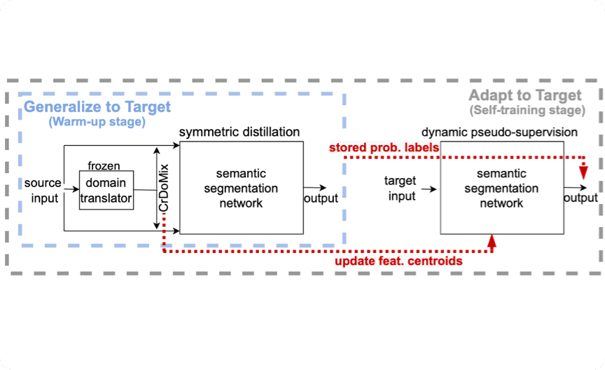
DiGA: Distil to Generalize and then Adapt for Domain Adaptive
Semantic Segmentation
Fengyi Shen, Akhil Gurram, Ziyuan Liu,
He Wang†, Alois Knoll†
CVPR 2023
@article{shen2023diga,
title={DiGA: Distil to Generalize and then Adapt for Domain Adaptive Semantic Segmentation},
author={Shen, Fengyi and Gurram, Akhil and Liu, Ziyuan and Wang, He and Knoll, Alois},
journal={arXiv preprint arXiv:2304.02222},
year={2023}
}
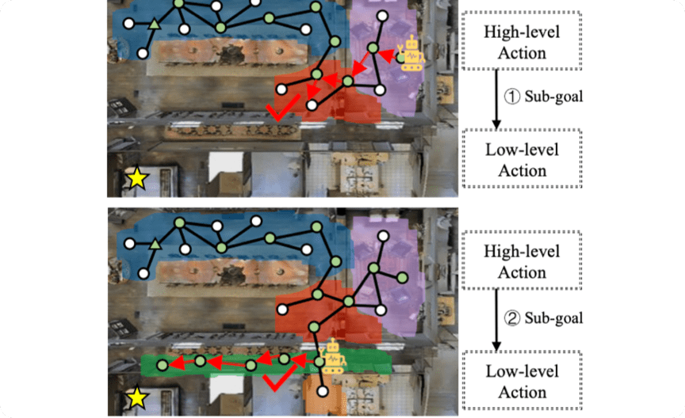
Adaptive Zone-aware Hierarchical Planner for Vision-Language
Navigation
Chen Gao, Xingyu Peng, Mi Yan,
He Wang, Lirong Yang, Haibing Ren, Hongsheng Li, Si Liu
CVPR 2023
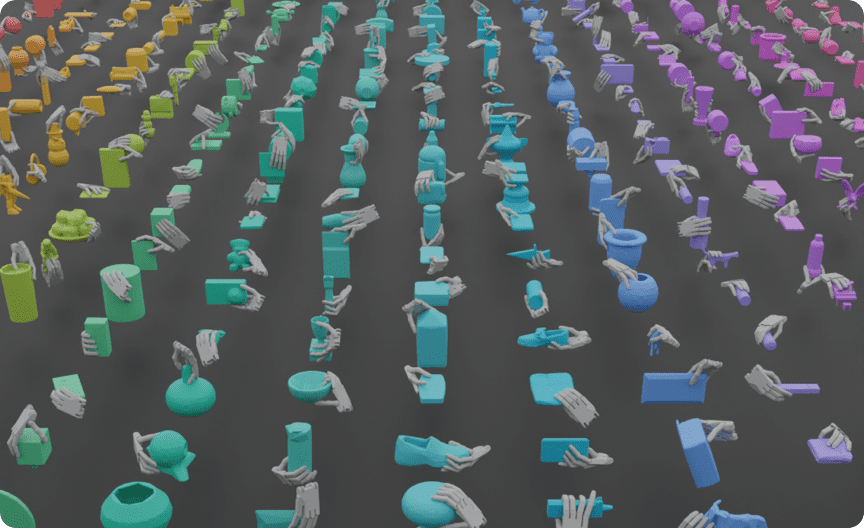
DexGraspNet: A Large-Scale Robotic Dexterous Grasp Dataset for
General Objects Based on Simulation
Ruicheng Wang*, Jialiang Zhang*, Jiayi Chen, Yinzhen Xu, Puhao
Li, Tengyu Liu,
He Wang†
ICRA 2023 (Outstanding Manipulation Paper Award Finalist)
@article{2210.02697,
title = {DexGraspNet: A Large-Scale Robotic Dexterous Grasp Dataset for General Objects Based on Simulation},
author = {Ruicheng Wang and Jialiang Zhang and Jiayi Chen and Yinzhen Xu and Puhao Li and Tengyu Liu and He Wang},
journal={arXiv preprint arXiv:2210.02697},
year = {2022}
}
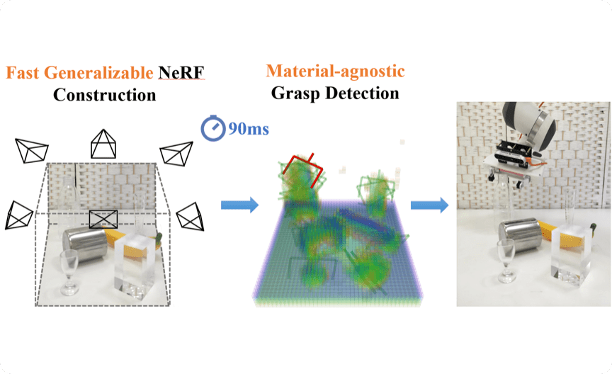
GraspNeRF: Multiview-based 6-DoF Grasp Detection for Transparent
and Specular Objects Using Generalizable NeRF
Qiyu Dai*, Yan Zhu*, Yiran Geng, Ciyu Ruan, Jiazhao Zhang,
He Wang†
ICRA 2023
@article{dai2022graspnerf,
title={GraspNeRF: Multiview-based 6-DoF Grasp Detection for Transparent and Specular Objects Using Generalizable NeRF},
author={Dai, Qiyu and Zhu, Yan and Geng, Yiran and Ruan, Ciyu and Zhang, Jiazhao and Wang, He},
journal={arXiv preprint arXiv:2210.06575},
year={2022}
}
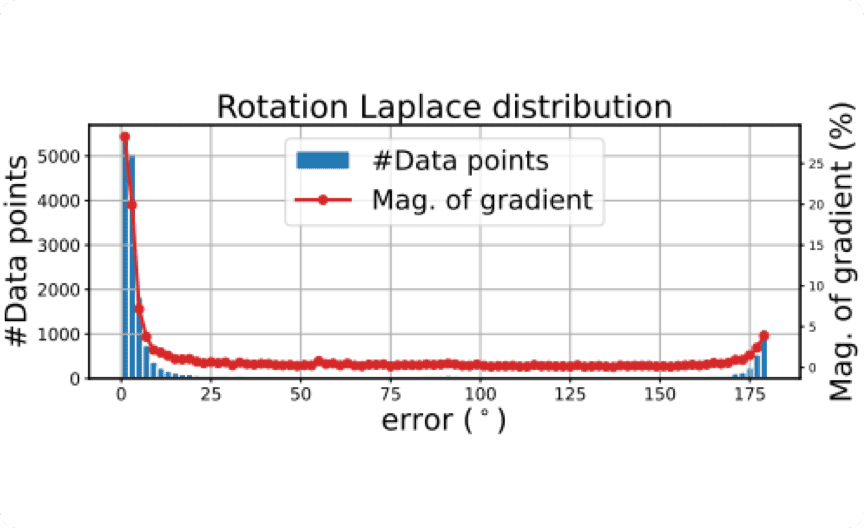
A Laplace-inspired Distribution on SO(3) for Probabilistic
Rotation Estimation
Yingda Yin, Yang Wang,
He Wang†, Baoquan Chen†
ICLR 2023 (notable top 25%)
@inproceedings{
yin2023a,
title={A Laplace-inspired Distribution on {SO}(3) for Probabilistic Rotation Estimation},
author={Yingda Yin and Yang Wang and He Wang and Baoquan Chen},
booktitle={The Eleventh International Conference on Learning Representations },
year={2023},
url={https://openreview.net/forum?id=Mvetq8DO05O}
}
Self-Supervised Category-Level Articulated Object Pose
Estimation with Part-Level SE(3) Equivariance
Xueyi Liu, Ji Zhang, Ruizhen Hu, Haibin Huang,
He Wang, Li Yi
ICLR 2023
@inproceedings{
liu2023selfsupervised,
title={Self-Supervised Category-Level Articulated Object Pose Estimation with Part-Level {SE}(3) Equivariance},
author={Xueyi Liu and Ji Zhang and Ruizhen Hu and Haibin Huang and He Wang and Li Yi},
booktitle={The Eleventh International Conference on Learning Representations },
year={2023},
url={https://openreview.net/forum?id=20GtJ6hIaPA}
}
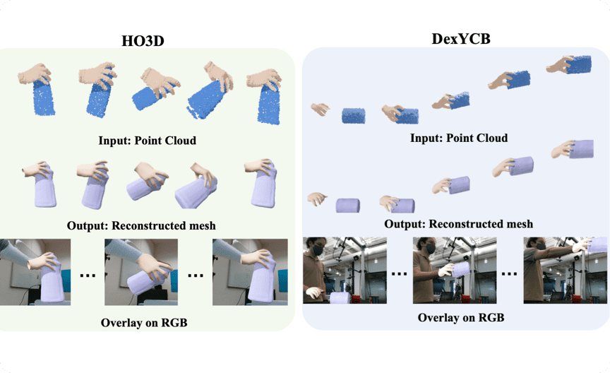
Tracking and Reconstructing Hand Object Interactions from Point
Cloud Sequences in the Wild
Jiayi Chen*, Mi Yan*, Jiazhao Zhang, Yenzhen Xu, Xiaolong Li,
Yijia Weng, Li Yi, Shuran Song,
He Wang†
AAAI 2023 (Oral Presentation)
@article{chen2022tracking,
title={Tracking and Reconstructing Hand Object Interactions from Point Cloud Sequences in the Wild},
author={Chen, Jiayi and Yan, Mi and Zhang, Jiazhao and Xu, Yinzhen and Li, Xiaolong and Weng, Yijia and Yi, Li and Song, Shuran and Wang, He},
journal={arXiv preprint arXiv:2209.12009},
year={2022}
}
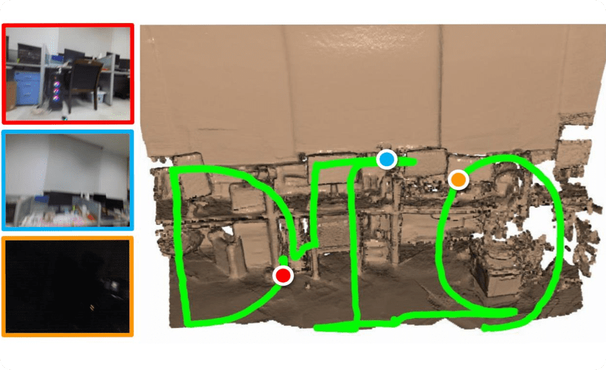
ASRO-DIO: Active Subspace Random Optimization Based Depth
Inertial Odometry
Jiazhao Zhang, Yijie Tang,
He Wang, Kai Xu
IEEE Transactions on Robotics (T-RO)
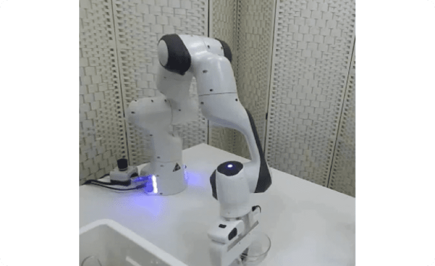
Domain Randomization-Enhanced Depth Simulation and Restoration
for Perceiving and Grasping Specular and Transparent Objects
Qiyu Dai*, Jiyao Zhang*, Qiwei Li, Tianhao Wu, Hao Dong, Ziyuan
Liu, Ping Tan,
He Wang†
ECCV 2022
@article{dai2022domain,
title={Domain Randomization-Enhanced Depth Simulation and Restoration for Perceiving and Grasping Specular and Transparent Objects},
author={Dai, Qiyu and Zhang, Jiyao and Li, Qiwei and Wu, Tianhao and Dong, Hao and Liu, Ziyuan and Tan, Ping and Wang, He},
journal={arXiv preprint arXiv:2208.03792},
year={2022}
}
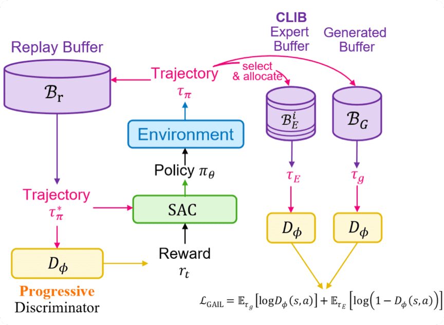
Learning Category-Level Generalizable Object Manipulation Policy
via Generative Adversarial Self-Imitation Learning from
Demonstrations
Hao Shen*, Weikang Wan*,
He Wang†
@article{shen2022learning,
title={Learning Category-Level Generalizable Object Manipulation Policy via Generative Adversarial Self-Imitation Learning from Demonstrations},
author={Shen, Hao and Wan, Weikang and Wang, He},
journal={arXiv preprint arXiv:2203.02107},
year={2022}
}
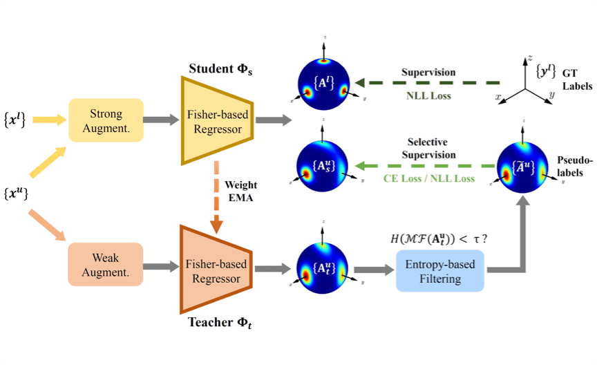
FisherMatch: Semi-Supervised Rotation Regression via
Entropy-based Filtering
Yingda Yin, Yingcheng Cai,
He Wang†, Baoquan Chen†
CVPR 2022 (Oral Presentation)
@article{yin2022fishermatch,
title={FisherMatch: Semi-Supervised Rotation Regression via Entropy-based Filtering},
author={Yin, Yingda and Cai, Yingcheng and Wang, He and Chen, Baoquan},
journal={arXiv preprint arXiv:2203.15765},
year={2022}
}
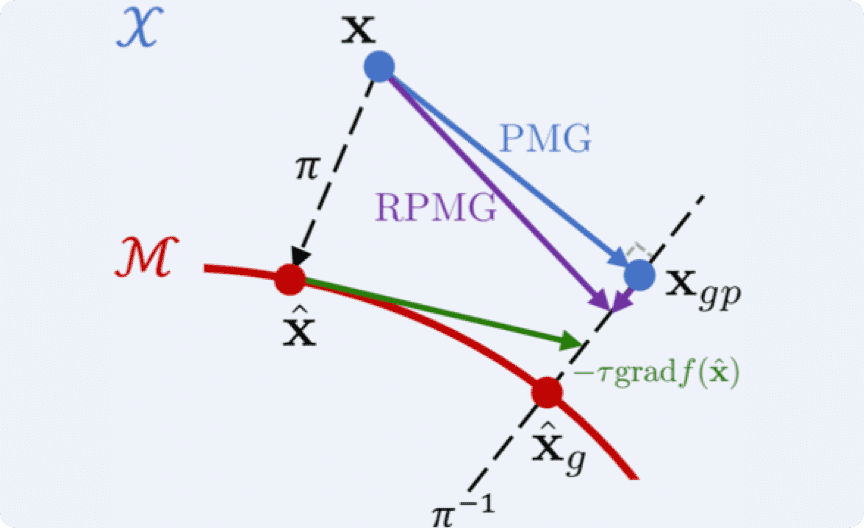
Projective Manifold Gradient Layer for Deep Rotation Regression
Jiayi Chen, Yingda Yin, Tolga Birdal, Baoquan Chen, Leonidas
Guibas,
He Wang†
CVPR 2022
@article{chen2021projective,
title={Projective Manifold Gradient Layer for Deep Rotation Regression},
author={Chen, Jiayi and Yin, Yingda and Birdal, Tolga and Chen, Baoquan and Guibas, Leonidas and Wang, He},
journal={arXiv preprint arXiv:2110.11657},
year={2021}
}
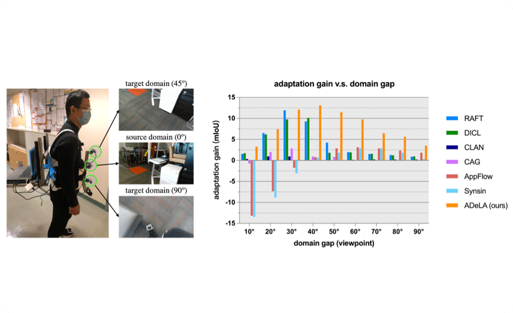
ADeLA: Automatic Dense Labeling with Attention for Viewpoint
Adaptation in Semantic Segmentation
Yanchao Yang*†, Hanxiang Ren*, He Wang, Bokui Shen, Qingnan Fan,
Youyi Zheng†, C Karen Liu, Leonidas Guibas
CVPR 2022 (Oral Presentation)
@article{yang2021adela,
title={ADeLA: Automatic Dense Labeling with Attention for Viewpoint Adaptation in Semantic Segmentation},
author={Yang, Yanchao and Ren, Hanxiang and Wang, He and Shen, Bokui and Fan, Qingnan and Zheng, Youyi and Liu, C Karen and Guibas, Leonidas},
journal={arXiv preprint arXiv:2107.14285},
year={2021}
}
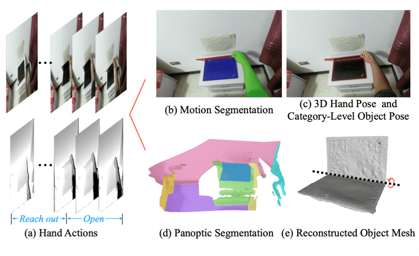
HOI4D: A 4D Egocentric Dataset for Category-Level Human-Object
Interaction
Yunze Liu, Yun Liu, Che Jiang, Kangbo Lyu, Weikang Wan, Hao
Shen, Boqiang Liang, Zhoujie Fu,
He Wang, Li Yi
CVPR 2022
@article{liu2022hoi4d,
title={HOI4D: A 4D Egocentric Dataset for Category-Level Human-Object Interaction},
author={Liu, Yunze and Liu, Yun and Jiang, Che and Fu, Zhoujie and Lyu, Kangbo and Wan, Weikang and Shen, Hao and Liang, Boqiang and Wang, He and Yi, Li},
journal={arXiv preprint arXiv:2203.01577},
year={2022}
}
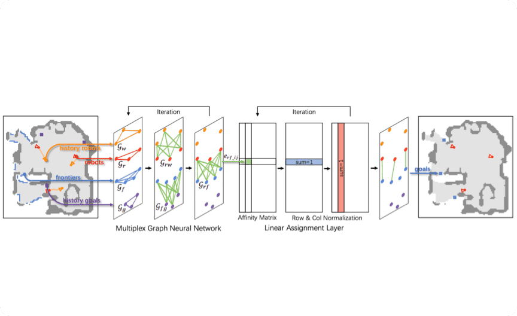
Multi-Robot Active Mapping via Neural Bipartite Graph Matching
Kai Ye*, Siyan Dong*, Qingnan Fan,
He Wang, Li Yi, Fei Xia, Jue Wang, Baoquan Chen
CVPR 2022
@article{ye2022multi,
title={Multi-Robot Active Mapping via Neural Bipartite Graph Matching},
author={Ye, Kai and Dong, Siyan and Fan, Qingnan and Wang, He and Yi, Li and Xia, Fei and Wang, Jue and Chen, Baoquan},
journal={arXiv preprint arXiv:2203.16319},
year={2022}
}

CodedVTR: Codebook-based Sparse Voxel Transformer with Geometric
Guidance
Tianchen Zhao, Niansong Zhang, Xuefei Ning,
He Wang, Li Yi, Yu Wang
CVPR 2022
@article{zhao2022codedvtr,
title={CodedVTR: Codebook-based Sparse Voxel Transformer with Geometric Guidance},
author={Zhao, Tianchen and Zhang, Niansong and Ning, Xuefei and Wang, He and Yi, Li and Wang, Yu},
journal={arXiv preprint arXiv:2203.09887},
year={2022}
}

Domain Adaptation on Point Clouds via Geometry-Aware Implicits
Yuefan Shen*, Yanchao Yang*, Mi Yan,
He Wang, Youyi Zheng, Leonidas J. Guibas
CVPR 2022
@article{shen2021domain,
title={Domain Adaptation on Point Clouds via Geometry-Aware Implicits},
author={Shen, Yuefan and Yang, Yanchao and Yan, Mi and Wang, He and Zheng, Youyi and Guibas, Leonidas},
journal={arXiv preprint arXiv:2112.09343},
year={2021}
}
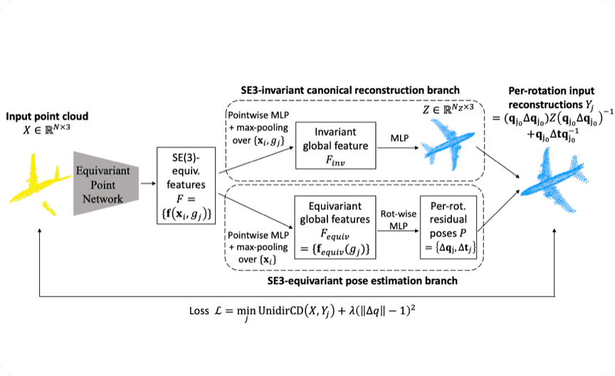
Leveraging SE(3) Equivariance for Self-supervised Category-Level
Object Pose Estimation from Point Clouds
Xiaolong Li, Yijia Weng, Li Yi, Leonidas J. Guibas, A. Lynn
Abbott, Shuran Song,
He Wang†
NeurIPS 21
@article{li2021leveraging,
title={Leveraging SE (3) Equivariance for Self-supervised Category-Level Object Pose Estimation from Point Clouds},
author={Li, Xiaolong and Weng, Yijia and Yi, Li and Guibas, Leonidas J and Abbott, A and Song, Shuran and Wang, He},
journal={Advances in Neural Information Processing Systems},
volume={34},
year={2021}
}
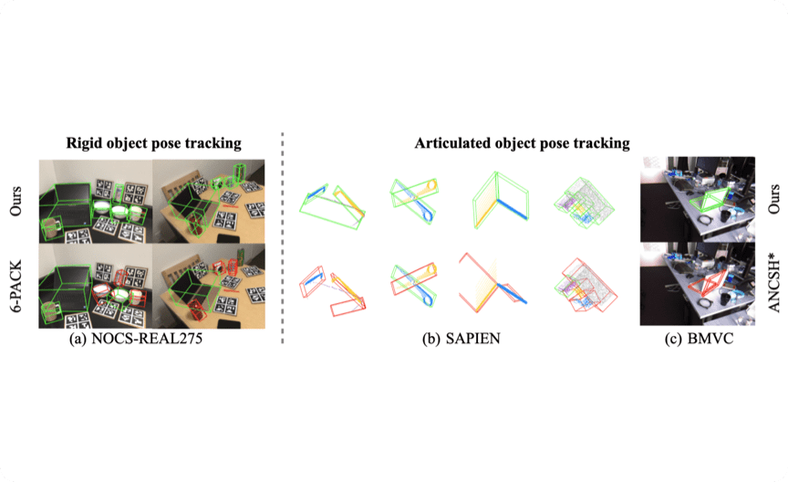
CAPTRA: CAtegory-level Pose Tracking for Rigid and Articulated
Objects from Point Clouds
Yijia Weng*,
He Wang*†, Qiang Zhou, Yuzhe Qin, Yueqi Duan, Qingnan Fan, Baoquan Chen,
Hao Su, Leonidas J. Guibas
ICCV 2021 (Oral Presentation)
@article{weng2021captra,
title={CAPTRA: CAtegory-level Pose Tracking for Rigid and Articulated Objects from Point Clouds},
author={Weng, Yijia and Wang, He and Zhou, Qiang and Qin, Yuzhe and Duan, Yueqi and Fan, Qingnan and
Chen, Baoquan and Su, Hao and Guibas, Leonidas J},
journal={arXiv preprint arXiv:2104.03437},
year={2021}
}
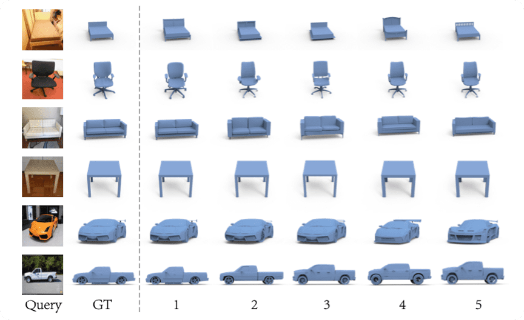
Single Image 3D Shape Retrieval via Cross-Modal Instance and
Category Contrastive Learning
Mingxian Lin, Jie Yang,
He Wang, Yu-Kun Lai, Rongfei Jia, Binqiang Zhao, Lin Gao
ICCV 2021
@inproceedings{lin2021single,
title={Single Image 3D Shape Retrieval via Cross-Modal Instance and Category Contrastive Learning},
author={Lin, Ming-Xian and Yang, Jie and Wang, He and Lai, Yu-Kun and Jia, Rongfei and Zhao, Binqiang and Gao, Lin},
booktitle={Proceedings of the IEEE/CVF International Conference on Computer Vision},
pages={11405--11415},
year={2021}
}
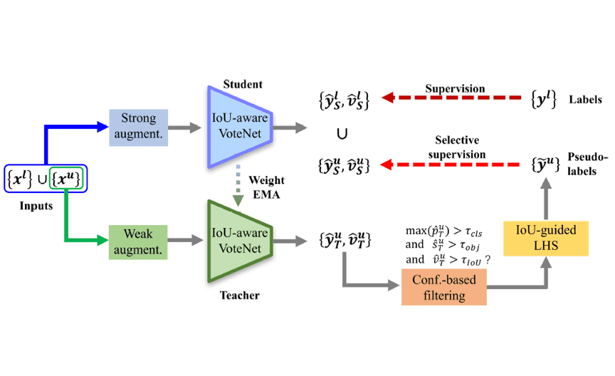
3DIoUMatch: Leveraging IoU Prediction for Semi-Supervised 3D
Object Detection
He Wang*, Yezhen Cong*, Or Litany, Yue Gao and Leonidas J. Guibas
ICCV 2021
@inproceedings{wang20213dioumatch,
title={3DIoUMatch: Leveraging iou prediction for semi-supervised 3d object detection},
author={Wang, He and Cong, Yezhen and Litany, Or and Gao, Yue and Guibas, Leonidas J},
booktitle={Proceedings of the IEEE/CVF Conference on Computer Vision and Pattern Recognition},
pages={14615--14624},
year={2021}
}
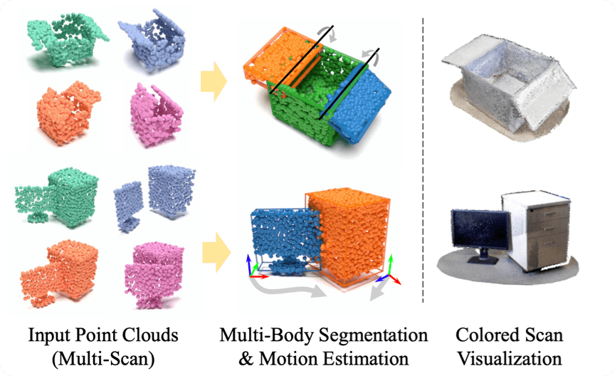
MultiBodySync: Multi-Body Segmentation and Motion Estimation via
3D Scan Synchronization
Jiahui Huang,
He Wang, Tolga Birdal, Minkyuk Sung, Federica Arrigoni,
Shi-Min Hu, and Leonidas J. Guibas
CVPR 2021 (Oral Presentation)
@inproceedings{huang2021multibodysync,
title={Multibodysync: Multi-body segmentation and motion estimation via 3d scan synchronization},
author={Huang, Jiahui and Wang, He and Birdal, Tolga and Sung, Minhyuk and Arrigoni, Federica and Hu, Shi-Min and Guibas, Leonidas J},
booktitle={Proceedings of the IEEE/CVF Conference on Computer Vision and Pattern Recognition},
pages={7108--7118},
year={2021}
}
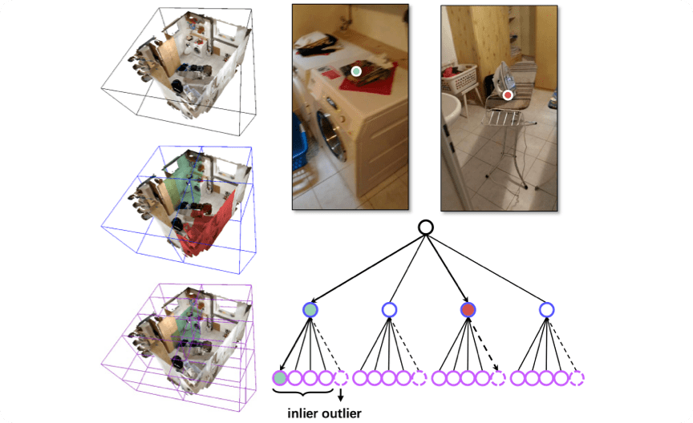
Robust Neural Routing Through Space Partitions for Camera
Relocalization in Dynamic Indoor Environments
Siyan Dong*, Qingnan Fan*,
He Wang, Ji Shi, Li Yi, Thomas Funkhouser, Baoquan Chen,
Leonidas J. Guibas
CVPR 2021 (Oral Presentation)
@InProceedings{Dong_2021_CVPR,
author = {Dong, Siyan and Fan, Qingnan and Wang, He and Shi, Ji and Yi, Li and Funkhouser, Thomas and Chen, Baoquan and Guibas, Leonidas J.},
title = {Robust Neural Routing Through Space Partitions for Camera Relocalization in Dynamic Indoor Environments},
booktitle = {Proceedings of the IEEE/CVF Conference on Computer Vision and Pattern Recognition (CVPR)},
month = {June},
year = {2021},
pages = {8544-8554}
}

Rethinking Sampling in 3D Point Cloud Generative Adversarial
Networks
He Wang*, Zetian Jiang*, Li Yi, Kaichun Mo, Hao Su,
Leonidas J. Guibas
CVPR 2021 Workshop on
Learning to Generate 3D Shapes and Scenes
@article{wang2020rethinking,
title={Rethinking Sampling in 3D Point Cloud Generative Adversarial Networks},
author={Wang, He and Jiang, Zetian and Yi, Li and Mo, Kaichun and Su, Hao and Guibas, Leonidas J},
journal={arXiv preprint arXiv:2006.07029},
year={2020}
}
PT2PC: Learning to Generate 3D Point Cloud Shapes from Part Tree
Conditions
Kaichun Mo,
He Wang, Li Yi, Xinchen Yan and Leonidas J.Guibas
ECCV 2020
@article{mo2020pt2pc,
title={PT2PC: Learning to Generate 3D Point Cloud Shapes from Part Tree Conditions},
author={Mo, Kaichun and Wang, He and Yan, Xinchen and Guibas, Leonidas},
journal={arXiv preprint arXiv:2003.08624},
year={2020}
}

Curriculum DeepSDF
Yueqi Duan*, Haidong Zhu*,
He Wang, Li Yi, Ram Nevatia, Leonidas J. Guibas
ECCV 2020
@misc{duan2020curriculum,
title={Curriculum DeepSDF},
author={Yueqi Duan and Haidong Zhu and He Wang and Li Yi and Ram Nevatia and Leonidas J. Guibas},
year={2020},
eprint={2003.08593},
archivePrefix={arXiv},
primaryClass={cs.CV}
}
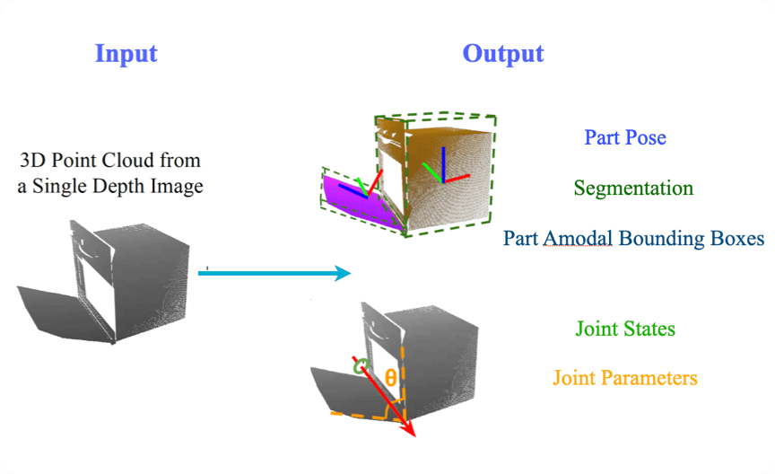
Category-level Articulated Object Pose Estimation
He Wang*, Xiaolong Li*, Li Yi, Leonidas Guibas, A. Lynn
Abbott, Shuran Song
CVPR 2020 (Oral Presentation)
@article{li2019category,
title={Category-Level Articulated Object Pose Estimation},
author={Li, Xiaolong and Wang, He and Yi, Li and Guibas, Leonidas and Abbott, A Lynn and Song, Shuran},
journal={arXiv preprint arXiv:1912.11913},
year={2019}
}
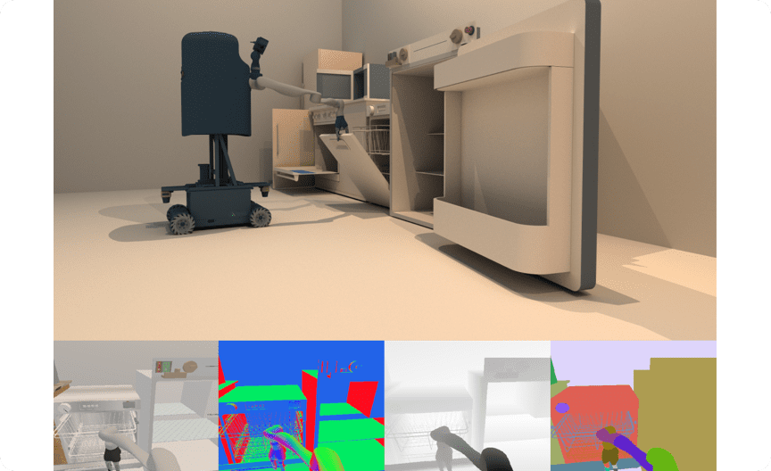
SAPIEN: A SimulAted Part-based Interactive ENvironment
Fanbo Xiang, Yuzhe Qin, Kaichun Mo, Yikuan Xia, Hao Zhu,
Fangchen Liu, Minghua Liu, Hanxiao Jiang, Yifu Yuan,
He Wang, Li Yi, Angel X.Chang, Leonidas J. Guibas and Hao
Su
CVPR 2020 (Oral Presentation)
@InProceedings{Xiang_2020_SAPIEN,
author={Xiang, Fanbo and Qin, Yuzhe and Mo, Kaichun and Xia, Yikuan and Zhu, Hao
and Liu, Fangchen and Liu, Minghua and Jiang, Hanxiao and Yuan, Yifu
and Wang, He and Yi, Li and Chang, Angel X. and Guibas, Leonidas J. and Su, Hao},
title={SAPIEN: A SimulAted Part-based Interactive ENvironment},
booktitle = {The IEEE Conference on Computer Vision and Pattern Recognition (CVPR)},
month={June},
year={2020}
}

Normalized Object Coordinate Space for Category-Level 6D Object
Pose and Size Estimation
He Wang, Srinath Sridhar, Jingwei Huang, Julien Valentin,
Shuran Song, Leonidas J. Guibas
CVPR 2019 (Oral Presentation),
WAICYOP Award 2022
@inproceedings{wang2019normalized,
title={Normalized object coordinate space for category-level 6d object pose and size estimation},
author={Wang, He and Sridhar, Srinath and Huang, Jingwei and Valentin, Julien and Song, Shuran and Guibas, Leonidas J},
booktitle={Proceedings of the IEEE/CVF Conference on Computer Vision and Pattern Recognition},
pages={2642--2651},
year={2019}
}
GSPN: Generative Shape Proposal Network for 3D Instance
Segmentation in Point Cloud
Li Yi, Wang Zhao,
He Wang, Minhyuk Sung, Leonidas Guibas
CVPR 2019
@article{yi2018gspn,
title={GSPN: Generative Shape Proposal Network for 3D Instance Segmentation in Point Cloud},
author={Yi, Li and Zhao, Wang and Wang, He and Sung, Minhyuk and Guibas, Leonidas},
journal={arXiv preprint arXiv:1812.03320},
year={2018}
}
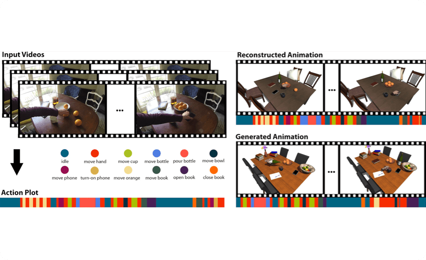
Learning a Generative Model for Multi-Step Human-Object
Interactions from Videos
He Wang*, Soeren Pirk*, Ersin Yumer, Vladimir Kim, Ozan Sener, Srinath
Sridhar, Leonidas J. Guibas
Eurographics 2019 (Best Paper Honorable Mention)